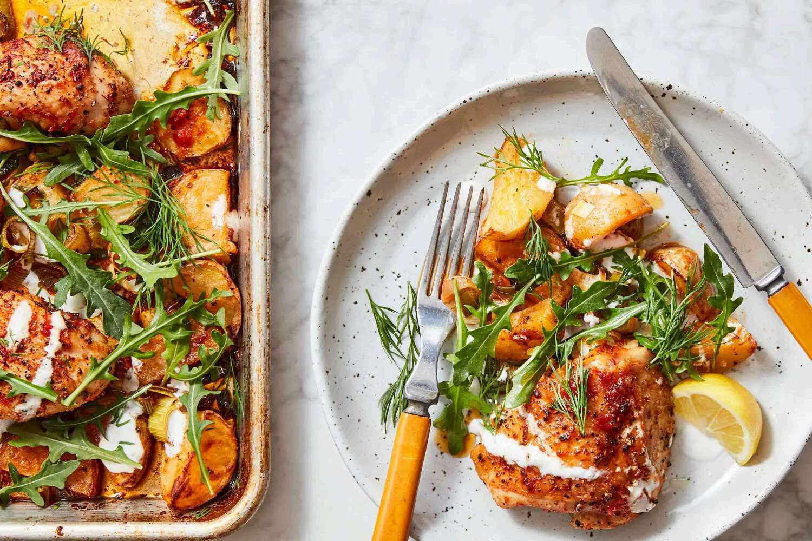

Курица с картошкой на противне
С луком-пореем, рукколой и чесночным йогуртом. Золотистая корочка, пряная харисса и свежая зелень — целый ужин в одном блюде.

Ингредиенты
На 4 порции. Вес и объём переведены в метрические меры и округлены.
Курица и овощи
- Куриные бёдра и голени≈ 680 г
- Небольшой картофельВ оригинале — Yukon Gold≈ 570 г
- Лук-порейТолько белая и светло-зелёная части2 стебля
Маринад и приправы
- ХариссаИли другой густой острый соус, например шрирача2 ст. л.
- Кумин (зира), молотый½ ч. л.
- Оливковое масло extra virgin3 ст. л. в маринад + 1½ ст. л. к порею; ещё немного для подачи4½ ст. л.
- Кошерная сольКоличество из оригинала; для мелкой соли см. заметку ниже2½ ч. л.
- Чёрный перецИ ещё немного по вкусу½ ч. л.
- Лимонная цедраПримерно с ½ лимона½ ч. л.
Соус и подача
- Натуральный йогуртОбычный, без добавок, не греческий≈ 80 мл
- Чеснок1 маленький зубчик
- Молодая руккола≈ 55–60 г
- Свежий укроп, нарезанныйпо вкусу
- Лимонный сокпо вкусу
Приготовление
-
30 минут или до 8 часов в холодильнике
Замаринуй курицу и картофель
Картофель разрежь пополам, затем на ломтики толщиной около 1,3 см. Сложи в большую миску вместе с курицей, приправь солью и перцем. Отдельно смешай хариссу, кумин и 3 ст. л. масла. Добавь к курице и картофелю, перемешай. Оставь на 30 минут при комнатной температуре или убери в холодильник на срок до 8 часов.
-
Подготовь порей
Разрежь порей вдоль пополам, тщательно промой между слоями и тонко нарежь. Смешай с лимонной цедрой, щепоткой соли и оставшимися 1½ ст. л. масла.
-
220 °C · первые 15 минут
Начни запекать
Разогрей духовку до 220 °C (425 °F). Выложи курицу и картофель на большой противень с бортиками в один слой. Запекай 15 минут, затем осторожно перемешай картофель.
-
Ещё 25–30 минут
Добавь порей
Распредели порей по противню. Верни в духовку ещё на 25–30 минут: курица и картофель должны полностью приготовиться и стать золотистыми, с лёгкой хрустящей корочкой.
-
Сделай чесночный йогурт
Пока всё запекается, натри чеснок в йогурт. Перемешай и приправь солью и перцем по вкусу.
-
Добавь свежесть и подавай
Полей готовую курицу и овощи йогуртовым соусом прямо на противне. Сверху разложи рукколу и укроп. Сбрызни оливковым маслом и лимонным соком и сразу подавай.
Видео приготовления
The New York Times Cooking
Нажми ▶, чтобы начать просмотр. Видео загружается с сайта NYT. Открыть видео отдельно ↗